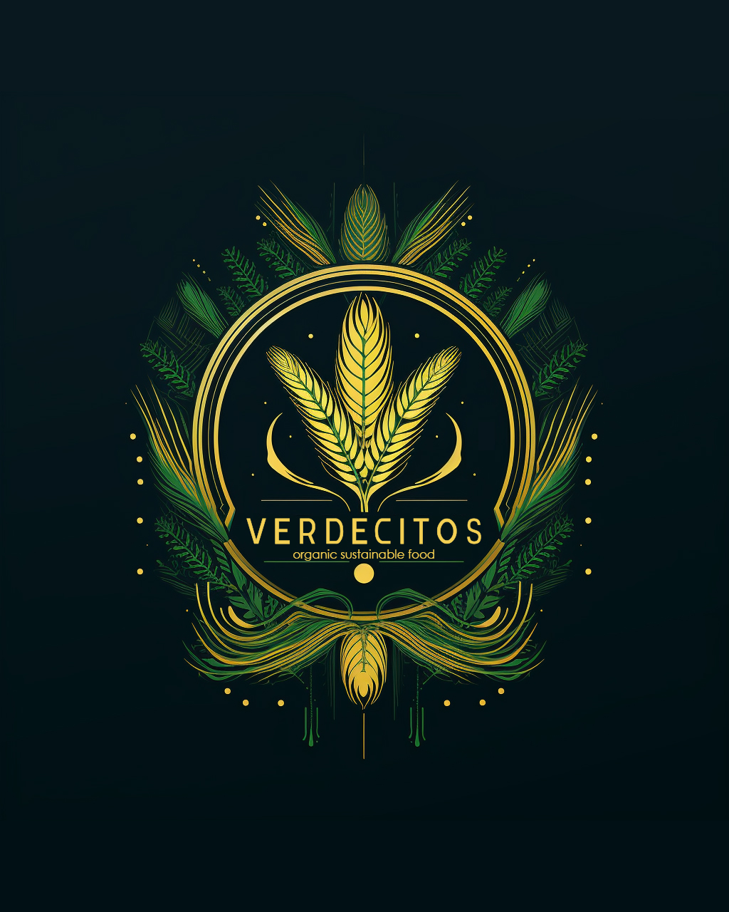

Quienes Somos
Verdecitos es una de nuestras marcas en Casa Tlazala que redefine la conexión entre la naturaleza y tu espacio vital. Aquí cultivamos nuestro propio trigo con dedicación para producir el más fresco y nutritivo Pasto de Trigo Orgánico, todo gracias a nuestras prácticas de permacultura o diseño regenerativo y a la innovación del Sistema hidropónico HCCAS.
Un Vistazo a Verdecitos: Naturaleza en cada hoja encontramos en el corazón de nuestra visión de sostenibilidad, somos la marca que lleva la frescura de la tierra directamente a tu hogar. Cultivamos nuestro trigo con técnicas orgánicas y lo transformamos en Pasto de Trigo Orgánico lleno de vitalidad. Cada brizna de Verdecitos cuenta la historia de un compromiso genuino con la calidad y la salud.
HCCAS por Mark Everson y Ecocity Builders : La Innovación que transforma nuestra casa, incorpora el sistema hidropónico HCCAS, una creación única que lleva la agricultura doméstica e industrial a nuevas alturas. Diseñado por Mark Everson y Ecocity Builders, el HCCAS garantiza un cultivo eficiente, conservación de agua, uso de CO2 para crecimiento de los brotes y una producción constante de Pasto de Trigo Orgánico, además de convertir todos los residuos en biomasa para generar biochar y regenerar nuestros suelos agrícolas. Es la perfecta simbiosis entre la naturaleza y la tecnología.
Únete a la Revolución Sostenible con Verdecitos, descubre un estilo de vida donde Verdecitos se convierte en sinónimo de sostenibilidad. Explora nuestra gama de productos, sumérgete en las bondades del Pasto de Trigo Orgánico y sé testigo de cómo Verdecitos y Casa Tlazala se unen para ofrecerte una experiencia única. ¡Bienvenido a tu nuevo hogar, donde Verdecitos florece y la naturaleza se convierte en parte de tu vida cotidiana!
Nuestro Equipo

Isaías Baruch Peña Ramírez
CEO de Labdgrafo, ingeniero colaborador y desarrollador del prototipo HCCAS.

Haydee De la Sota Gracia
Gestión Ambiental.
David Peña Alatríste
Ing. Agrónomo.
Alejandra Abeyro
Especialista en Nutrición y Alimentos.
Marciano Rosas Lora
Productor Campesino Comunero.
© 2023 Verdecitos Organic Sustainable Food.
All Rights Reserved.